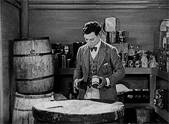

Découvre 3 @Rule Junit bien cool en 10 minutes
//given
tu pratiques le TDD, ou ses variantes en Java: ce talk est pour toi!
mais tester
bigLegacy.jar
avec plein de System.out, d'exceptions exotiques, voir de crash à vérifier: c'est la plaie
pire, plein de tests ne sont même plus joués sans me le dire
//when
j'arrive à faire une live démo sans "effet-démo"

//then
bénéfice attendu: tu as appris quelques tips utilisables dès demain
code & slides dispo sur github, même en cas de "effet-démo"
label "GIF animés inside" garanti dans les slides
Tester
le dentier ou la brosse à dent ?
|
Read the doc!
JUnit rules by junit team
System Rules by Stephan Birkner & Marc Philipp
Let's go!
Le code avec la branche solution
Human Talk 8 septembre 2015